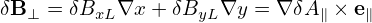
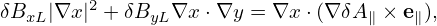
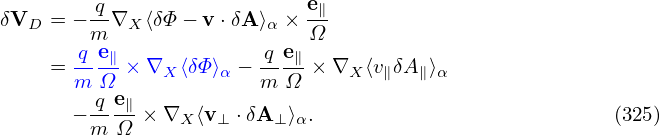

![[ ( ) ]
-∂ + v∥e∥ + vD + vE + v∥δB⊥ ⋅∇X δf
∂t ( ) B0 [( ) ]
= − v + v δB-⊥ ⋅∇ F − q- v e + v + v δB-⊥ ⋅δE ∂F0. (322)
E ∥ B0 X 0 m ∥ ∥ D ∥ B0 ∂ 𝜀](nonlinear_gyrokinetic_equation353x.png)
In the drift-kinetic limit, ⟨v⊥⋅δE⟩α = 0, ⟨δB∥v⊥⟩α = 0, and ⟨δh⟩α = δh, where δh is an arbitrary ï¬eld quantity. Using these, gyrokinetic equation (321) is written as
Neglecting the nonlinear terms, drift-kinetic equation (322) is written
Next let us derive the parallel momentum equation from the linear drift kinetic equation (this is needed in my simulation). Multiplying the linear drift kinetic equation (323) by qv∥ and then integrating over velocity space, we obtain Equation (324) involve ∇Xδf and this should be avoided in particle methods whose goal is to avoid directly evaluating the derivatives of δf over phase-space coordinates. On the other hand, the partial derivatives of velocity moment of δf are allowed. Therefore, we would like to make the velocity integration of δf appear. Note that ∇Xδf here is taken by holding (𝜀,μ) constant and thus v∥ is not a constant and thus can not be moved inside ∇X. Next, to facilitate performing the integration over v∥, we transform the linear drift kinetic equation (323) into variable (X,μ,v∥).
The kinetic equation given above is written in terms of variable (X,μ,𝜀). Next, we transform it into coordinates (X′,μ′,v∥) which is deï¬ned by
 | (325) |
 | (326) |
and
|
| (327) |
Use this, we have


Multiplying the linear drift kinetic equation (330) by qv∥ and then integrating over velocity space, we obtain
Consider the simple case that F0 does not carry current, i.e., F0(X,μ,v∥) is an even function about v∥. Then it is obvious that the integration of the terms in red in Eq. (331) are all zero. Among the rest terms, only the following term
![∫
− q-q dvv∥[(v∥e∥)⋅δE ]∂F0-1-
m ∂v∥v∥](nonlinear_gyrokinetic_equation363x.png) | (332) |
explicitly depends on δE. Using dv = 2πBdv∥dμ, the integration in the above expression can be analytically performed, giving
![∫
− q-q dvv∥[(v∥e∥)⋅δE]∂F0-1-
m ∂v∥ v∥
q2∫ ∂F0
= − m- 2πBdv ∥dμv∥δE∥∂v∥-
2∫ ∫
= − q- 2πBd μδE∥ v∥∂F0dv∥
m ( ∂v∥ )
q2∫ ∫
= − m 2πBd μδE∥ 0− F0dv∥
q2
= --δE ∥n0. (333)
m](nonlinear_gyrokinetic_equation364x.png)
Equation (334) involve derivatives of δf with respect to space and v∥ and these should be avoided in the particle method whose goal is to avoid directly evaluating these derivatives. Using integration by parts, the terms involving ∂∕∂v∥ can be simpliï¬ed, yielding

 ⋅∇XF0 is written as
⋅∇XF0 is written as
 | (339) |
where B∥⋆ = B0 (refer to my another notes).  Using b ⋅∇× b ≈ 0, we obtain B∥⋆ ≈ B. Then vD is written
vD = ∇× b +  b ×∇B0. b ×∇B0.
|
Using this and dv = 2πB0dv∥dμ, the term −q ∫ dvv∥vD ⋅∇Xδf is written as

 | (342) |
which, for the isotropic case (p∥0 = p⊥0 = p0), is simpliï¬ed to
 | (343) |
then Eq. (341) is written as

In the case of uniform magnetic ï¬eld, the parallel momentum equation (341) is written as
 | (345) |
Using the gyrokinetic theory and taking the drift-kinetic limit, the perturbed perpendicular electron flow, δVe⊥, is written (see Sec. B or Appendix in Yang Chen’s paper[2])
 | (346) |
where ne0 is the equilibrium electron number density, δpe⊥ is the perturbed perpendicular pressure of electrons.
Â
Â
Drift kinetic equation is written
|
| (347) |
where f = f(x,μ,v∥,t), μ = mv⊥2∕B0 is the magnetic moment,  = b + δB⊥∕B0, b = B0∕B0 is the unit vector along the equilibrium magnetic ï¬eld, vD = vD(x,μ,v∥) is the guiding-center drift in the equilibrium magnetic ï¬eld. δE and δB are the perturbed electric ï¬eld and magnetic ï¬eld, respectively.
Multiplying the drift kinetic equation () by v∥ and then integrating over velocity space, we obtain
 | (348) |
which can be written as
 | (349) |
Using dv = B−12πmdv∥dμ, the last term on the RHS of the above equation is written


|
| (352) |
Using Eq. () in Eq. (), we obtain
|
| (353) |
Â
————–
Â
Â
|
| (354) |
Â
ddddd
![∫ ∫ ( )
v v˜b + v + δE-×-b ⋅∇f dv
∥ ∥ D B0 e
∫ ∫ ( ˜ δE-×-b)
= v∥b + vD + B0 ⋅∇(v∥fe)dv
∫ ∫ ∫ ∫ ∫ ∫ δE× b
= v∥˜b⋅∇ (v∥fe)dv + vD ⋅∇ (v∥fe)dv+ ------⋅∇ (v∥fe)dv
∫ ∫ ∫ ∫ ∫ ∫ B0
= ˜b ⋅∇(v2∥fe)dv + vD ⋅∇ (v∥fe)dv+ δE-×-b ⋅∇ (v∥fe)dv
∫ ∫ ∫ ∫ B0 ∫ ∫
= ˜b ⋅∇(v2fe)2π B-dvdμ + vD ⋅∇ (v fe)2πB-dv dμ+ δE-×-b⋅∇ (v fe)2πB-dv dμ
∫ ( ∥ m ∥) ∫ ∫ ∥ m ∥ ∫ ∫ B0 ∥ m ∥
˜ 2 1- B- δE-×-b B-
= b⋅∇ v∥fe2π m dv∥dμ B + vD ⋅∇ (v∥fe)2πm dv∥dμ + B0 ⋅∇(v∥fe)2π m dv∥dμ
(p∥ ) ∫ ∫ B ∫ ∫ δE × b B
= ˜b⋅∇ -B B + vD ⋅∇ (v∥fe)2πm-dv∥dμ+ --B--- ⋅∇ (v∥fe)2πm-dv∥dμ
(p ) ∫ ∫ 0 ∫ ∫
= ˜b⋅∇ -∥ B + -1-b× (μ∇B ) ⋅∇ (v∥fe)2πB-dv∥dμ + -1--b× (mv2∥κ )⋅∇(v∥fe)2π B-dv∥dμ
∫ ∫ B mΩ m m Ω m
+ δE-×-b ⋅∇(v∥fe)2π Bdv∥dμ
B0 m](nonlinear_gyrokinetic_equation391x.png)
Â
![[ ]
∂-
∂t +(v∥e∥ + vD )⋅∇X δf
( δB ) q ∂F
= − vE + v∥--⊥- ⋅∇XF0 − --[(v∥e∥ +vD )⋅δE]---0. (323)
B0 m ∂𝜀](nonlinear_gyrokinetic_equation354x.png)
![∫
∂δj∥ = − q dvv (ve + v )⋅∇ δf
∂t ∥( ∥∥ D ) X
∫ δB⊥- -q ∫ ∂F0-
− q dvv ∥ vE + v∥ B0 ⋅∇XF0 − m q dvv∥[(v∥e∥ + vD )⋅δE]∂𜀠. (324)](nonlinear_gyrokinetic_equation355x.png)
![∫ ∫
∂δj∥ + q dvv (ve + v )⋅∇ δf − q dvv e ⋅μ ∇B ∂δf-
∂t ∥ ∥∥ D X ∥ ∥ ∂v∥
∫ ( δB ⊥) ∫ ( vE δB ⊥) ∂F0
= − q dvv∥ vE +v∥-B0- ⋅∇XF0 + q dvv∥ v--+ -B0- ⋅μ∇B ∂v--
∫ [( ) ] ∥ ∥
− q-q dvv∥ e∥ + vD ⋅δE ∂F0. (331)
m v∥ ∂v∥](nonlinear_gyrokinetic_equation362x.png)